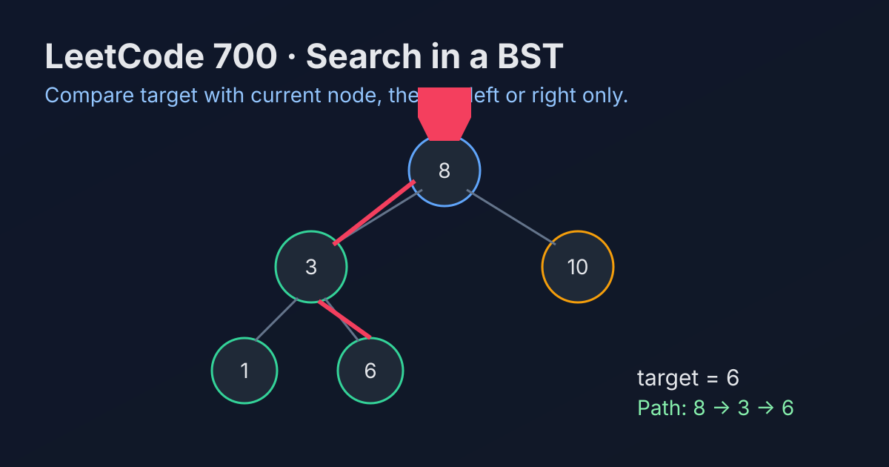

LeetCode 700: Search in a Binary Search Tree (BST Property Guided Traversal)
LeetCode 700TreeBinary Search TreeToday we solve LeetCode 700 - Search in a Binary Search Tree. The BST ordering lets us drop half of the tree each step instead of scanning all nodes.
Source: https://leetcode.com/problems/search-in-a-binary-search-tree/

English
Problem Summary
Given the root of a BST and an integer val, return the subtree rooted at the node whose value equals val. If it does not exist, return null.
Key Insight
BST invariant: left subtree values are smaller, right subtree values are larger. So each comparison tells us exactly which branch can still contain the answer.
Optimal Algorithm
Start from root: if current value equals val, return it. If val is smaller, move left; otherwise move right. Repeat until found or node becomes null.
Complexity Analysis
Time: O(h), where h is tree height (balanced: O(log n), worst: O(n)).
Space: O(1) iterative, O(h) recursive call stack.
Common Pitfalls
- Forgetting to return null when traversal ends.
- Traversing both children like a normal binary tree search (loses BST advantage).
- Mixing up comparison directions for left vs right move.
Reference Implementations (Java / Go / C++ / Python / JavaScript)
class Solution {
public TreeNode searchBST(TreeNode root, int val) {
TreeNode cur = root;
while (cur != null) {
if (cur.val == val) return cur;
cur = val < cur.val ? cur.left : cur.right;
}
return null;
}
}func searchBST(root *TreeNode, val int) *TreeNode {
cur := root
for cur != nil {
if cur.Val == val {
return cur
}
if val < cur.Val {
cur = cur.Left
} else {
cur = cur.Right
}
}
return nil
}class Solution {
public:
TreeNode* searchBST(TreeNode* root, int val) {
TreeNode* cur = root;
while (cur != nullptr) {
if (cur->val == val) return cur;
cur = (val < cur->val) ? cur->left : cur->right;
}
return nullptr;
}
};class Solution:
def searchBST(self, root: Optional[TreeNode], val: int) -> Optional[TreeNode]:
cur = root
while cur:
if cur.val == val:
return cur
cur = cur.left if val < cur.val else cur.right
return Nonevar searchBST = function(root, val) {
let cur = root;
while (cur !== null) {
if (cur.val === val) return cur;
cur = val < cur.val ? cur.left : cur.right;
}
return null;
};中文
题目概述
给定二叉搜索树根节点 root 和整数 val，返回值等于 val 的节点为根的子树；如果不存在则返回 null。
核心思路
利用 BST 的有序性：左子树都更小，右子树都更大。每次比较都能排除一整侧子树，不需要全树遍历。
最优算法
从根开始循环：若当前值等于 val 直接返回；若 val 更小就去左子树，否则去右子树。直到找到目标或节点变空。
复杂度分析
时间复杂度：O(h)，其中 h 为树高（平衡树为 O(log n)，最坏退化为 O(n)）。
空间复杂度：迭代写法 O(1)，递归写法为调用栈 O(h)。
常见陷阱
- 遍历结束后忘记返回 null。
- 按普通二叉树去两边都搜，失去 BST 剪枝优势。
- 左右比较方向写反。
多语言参考实现（Java / Go / C++ / Python / JavaScript）
class Solution {
public TreeNode searchBST(TreeNode root, int val) {
TreeNode cur = root;
while (cur != null) {
if (cur.val == val) return cur;
cur = val < cur.val ? cur.left : cur.right;
}
return null;
}
}func searchBST(root *TreeNode, val int) *TreeNode {
cur := root
for cur != nil {
if cur.Val == val {
return cur
}
if val < cur.Val {
cur = cur.Left
} else {
cur = cur.Right
}
}
return nil
}class Solution {
public:
TreeNode* searchBST(TreeNode* root, int val) {
TreeNode* cur = root;
while (cur != nullptr) {
if (cur->val == val) return cur;
cur = (val < cur->val) ? cur->left : cur->right;
}
return nullptr;
}
};class Solution:
def searchBST(self, root: Optional[TreeNode], val: int) -> Optional[TreeNode]:
cur = root
while cur:
if cur.val == val:
return cur
cur = cur.left if val < cur.val else cur.right
return Nonevar searchBST = function(root, val) {
let cur = root;
while (cur !== null) {
if (cur.val === val) return cur;
cur = val < cur.val ? cur.left : cur.right;
}
return null;
};
Comments